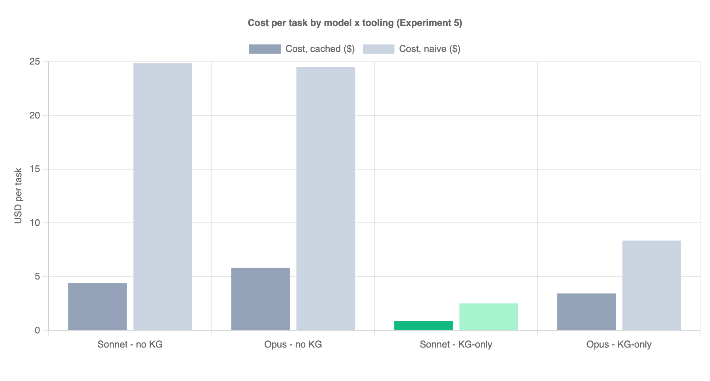
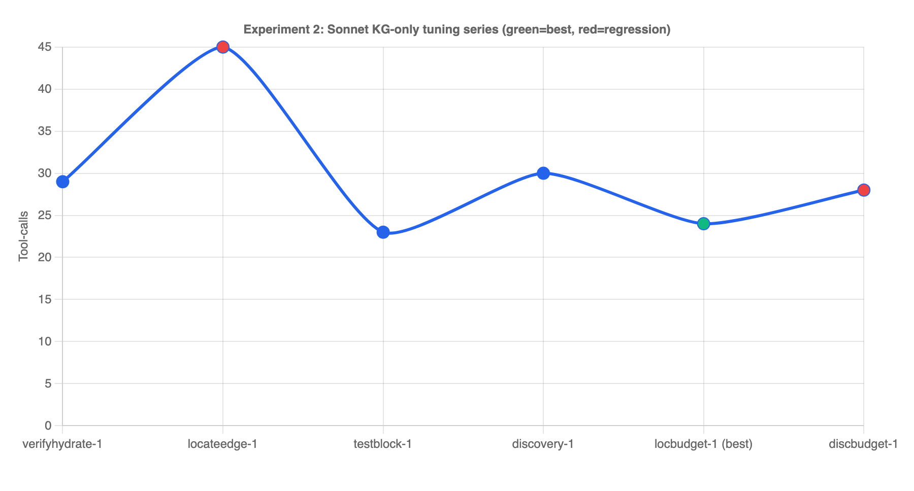
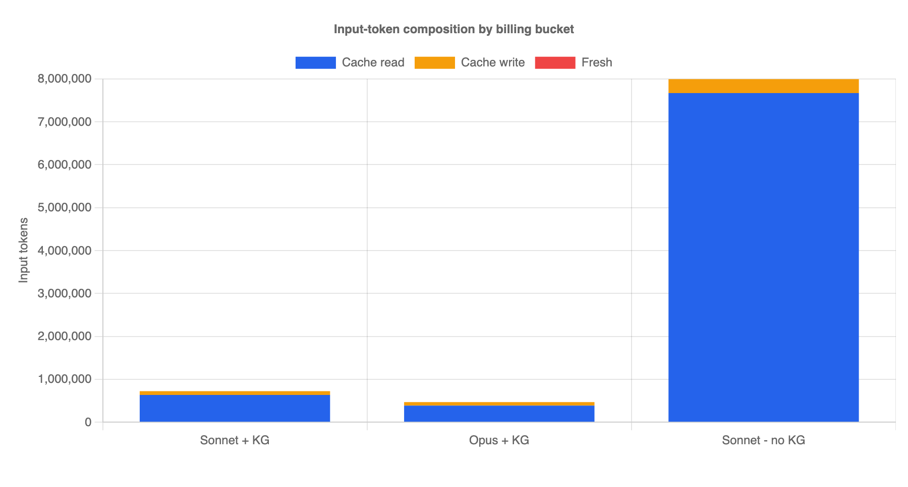
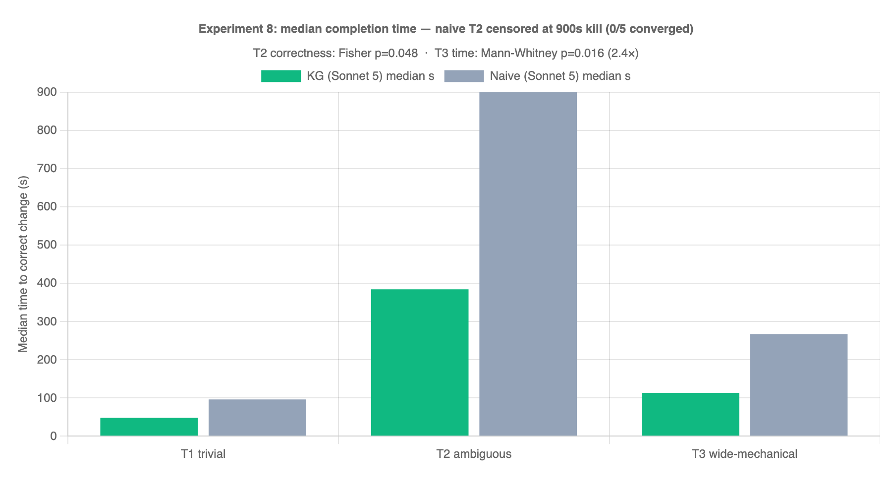
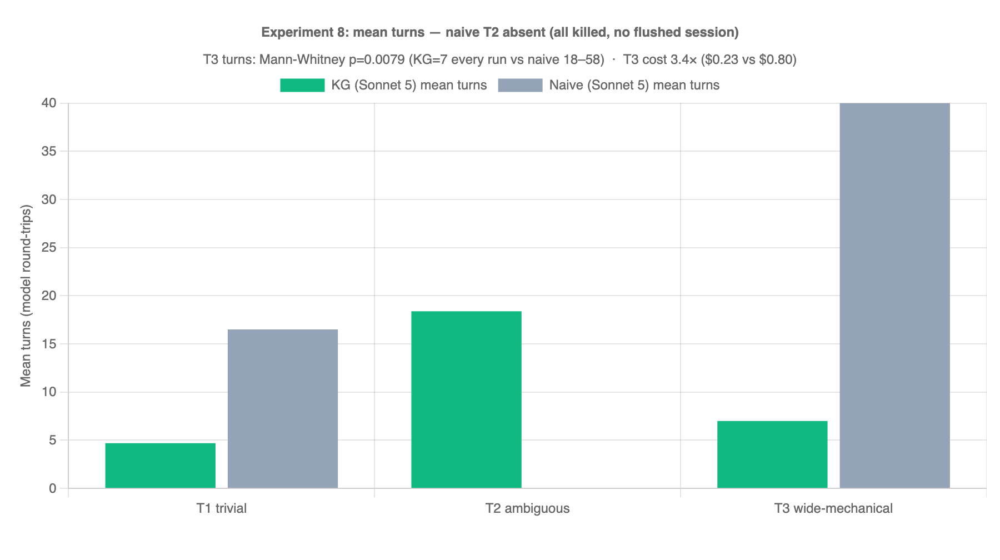

CodeGraph
Give an AI code agent a knowledge graph instead of grep & read — and watch it get ~10× cheaper, ~3.5× fewer steps, and stay correct.
Same task, same repo, correct + green in every kept cell.
Same question. Two agents. One's blindfolded.
Both are the same Sonnet model, asked the same real question about this codebase. The only difference: one has grep/read/shell, the other has only the knowledge graph.
“Which CCM key is responsible for showing the new date picker, and what is the structure of the key & value to be put on CCM?”
no grep / read / shell — discovery via locate + read on the graph
grep + read_file + shell — the usual way
→ Switching to the terminal now — watch the token counter & the clock at the end of each pane.
How an AI agent normally explores a big repo
- grep × 26, read_file × 14… hunting for the right symbol
- Re-reads the same files; whole files for 3 relevant lines
- Every step re-sends a growing context → tokens explode
- Guesses symbol names, edits the wrong place, retries
tokens ≈ turns × growing-context. The exploration spiral is where the money and minutes go — 84 calls / 8.05M tokens for one small change.
Discover through a graph, not the filesystem
Index the repo once into a symbol graph: nodes are symbols (functions, types, constants); edges are the calls & references between them.
The agent asks the graph a precise question and gets the exact edit set back — definition + every reference + the covering tests — with the code inline. No grep, no whole-file reads.
KG-only: no grep/read/shell — starving the slow path forces the cheap one.
What each graph query does
locate
"default date range" or a literal like #07A093 → ranked candidate symbols with file:line. Turns a description into the thing to edit.
plan
Returns the whole blast-scoped edit set: definition + references + covering tests + literal-assert sites, code shown inline. No reading needed.
trace
Follows calls/references outward from a symbol up to N hops — e.g. "does this widget reach the primary color constant?"
impact
The reverse of trace: everyone that depends on a symbol — the blast radius before you change it.
apply_edit_at_site
Edits by (file, line) — fetches its own context, applies atomically across all sites, and runs the affected tests in one shot.
verify
A single, memoized verdict over the whole working-tree diff. Called once at the end — unchanged green suites are skipped.
The graph DB is built once (codegraph index), self-heals after re-index, and annotations.json is the durable, git-committed team memory.
Same change, two worlds
- “Where is this? Let me grep…” × many
- Reads 6 files fully to find 4 lines
- Edits, guesses the test, re-runs the whole suite repeatedly
- 84 calls · 8.05M tokens · $4.39
locate→ strong match →planreturns the whole edit setapply_edit_at_sitefetches its own context and verifies- One verify at the end — memoized, cheap
- 24 calls · 0.75M tokens · $0.86
A/B: model × tooling, identical task
- One real, scoped change in a production front-end codebase (change a chart series color + line width, fix the broken tests).
- Held constant: repo, task, success bar (correct + tests green).
- Varied: model (Sonnet / Opus) × tooling (naive grep+read vs KG-only).
- Measured: tool-calls, tokens, cached cost, wall-clock, turns.
Every kept cell produced the same correct, green result — so the differences below are pure efficiency, not quality.
Cost per task (cached $, lower is better)
KG-only Sonnet is the cost winner — ~5× cheaper than its own naive baseline and ~4× cheaper than KG-only Opus.
Tokens & tool-calls collapse
Input tokens (millions)
Tool-calls per task
Fewer turns × smaller context = the compounding win. KG-only Sonnet: ~10× fewer tokens, 3.5× fewer calls than naive Sonnet.
Headline numbers
| Agent | Tool-calls | Tokens | Cost (cached) |
|---|---|---|---|
| Sonnet · no KG | 84 | 8.05M | $4.39 |
| Opus · no KG | 33 | 1.56M | $5.81 |
| Sonnet · KG-only | 24 | 0.75M | $0.86 |
| Opus · KG-only | 18 | 0.49M | $3.43 |
Pick Sonnet KG-only to save money (cost-optimal). Pick Opus KG-only for the fewest turns (18 calls) when latency matters more than cost.
KG-preferred does NOT work — it has to be KG-only
Given the choice, the model reverts to reflex: grep × 26 + read × 14, ignores the graph, and lands right back on the ~84-call baseline.
With no grep/read/shell, the only path is the graph. The starvation is the mechanism, not just a measurement trick.
So the agents ship with grep/read/list/shell removed by design.
Cost & tool-calls by model × tooling


Tuning the loop & where the tokens live


It's also faster


What it's great at — and what it isn't
- Scoped, symbol-level changes: rename, change a constant/color/value, tweak a function + fix the tests it breaks
- Big, well-structured codebases where “where is this?” is the hard part
- Fanning out the same small change to many call sites
- JSX/prop wiring the graph doesn't track — trace from the shared component's config symbol instead
- Greenfield / brand-new files — nothing to discover yet
How it works
- One shared MCP server; each repo carries its own
codegraph-ext/scripts +.codegraph/graph DB. - Repo auto-detected from your working dir — just send the task, no path needed.
apply_edit_at_siteedits and verifies in one shot;verifyis a single memoized PASS/FAIL over the whole diff.- Self-healing DB;
annotations.jsonis the durable, git-committed team memory. - Mechanical turn-cutters: budgets + a PASS-latch stop the agent the moment tests are green.
Hardened from real use
Fail-fast setup
Missing scripts/DB → one actionable line, never a cryptic crash.
Soft discovery
A bad trace/read teaches the agent instead of killing the run.
Orchestrator-only reset
Agents can't zero their own budgets to escape a spiral.
Untracked-safe latch
Stray files no longer wedge the “task done” latch.
Bare-path nudge
Reads without a line range get pointed back to locate/plan.
install.sh --check
One command to confirm a repo is wired up correctly.
Same result. A tenth of the tokens.
Starve the agent of grep, hand it a knowledge graph, and scoped changes get dramatically cheaper and faster — without giving up correctness.